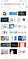

Google Ranking algorithm update and content aggregators 2021
Google is planning a major update to its ranking algorithm. This update planned to occur in may 2021 will rate more visitor experience VX by giving more weight to page content loading speed and user input availability speed. Like every google algorithm updates this one will impact content website like medium, quora, stackoverflow, hunspot, writefreely… like it did for the panda update by cutting traffic from website like squidoo in favour of others. These content aggregation websites should plan and study now how this change will impact their traffic. We cannot know what the change will be but we do have enough past data and how this update is technically specified to simulate some paths about the possible traffic impacts. If your website rank good now you should track these keywords that are ranking good and try to see how they will be when the update will be live.
